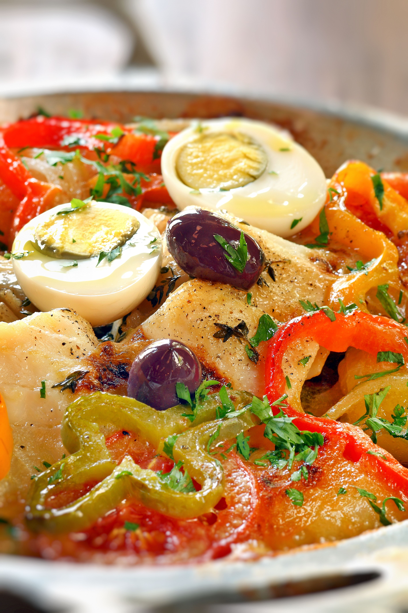

Bacalao (salted, dried codfish) stars in this flavorful Spanish-style fish stew from the Basque region of Spain. This traditional dish is popular in all Spanish-speaking countries; in fact, each country's version is slightly different. In Mexico, it's usually made for Christmas, New Year's Eve, and Lent. In Puerto Rico, it's enjoyed during Lent but also year-round. This is one of the Puerto Rican versions.
Soak salted codfish in about 2 quarts of water, changing the water three times over the course of 8 hours. Drain, then cut codfish into bite-sized pieces.
CLayer 1/2 of each ingredient in a pot in the following order: potatoes, codfish, onions, hard-boiled eggs, capers, garlic, olives, roasted red peppers, and raisins. Place bay leaf on raisins, then pour 1/2 of the tomato sauce and 1/2 of the olive oil over top. Repeat layers in the same order, skipping bay leaf. Pour water and white wine over top; do not stir.
Cover and bring to a boil over medium heat. Reduce the heat to medium-low and simmer until potatoes are tender, about 30 minutes.